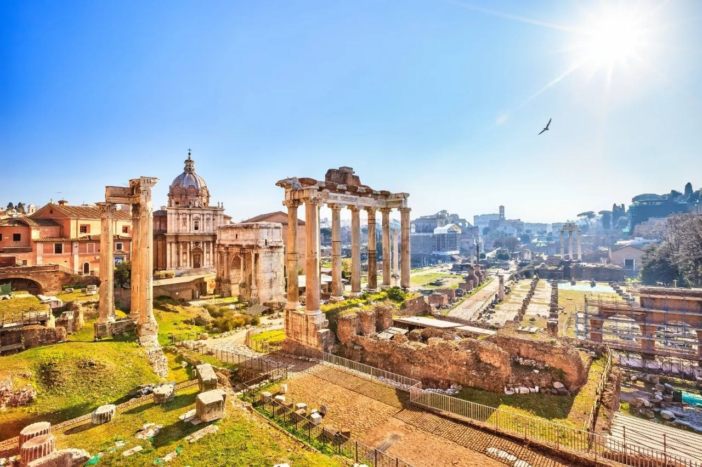
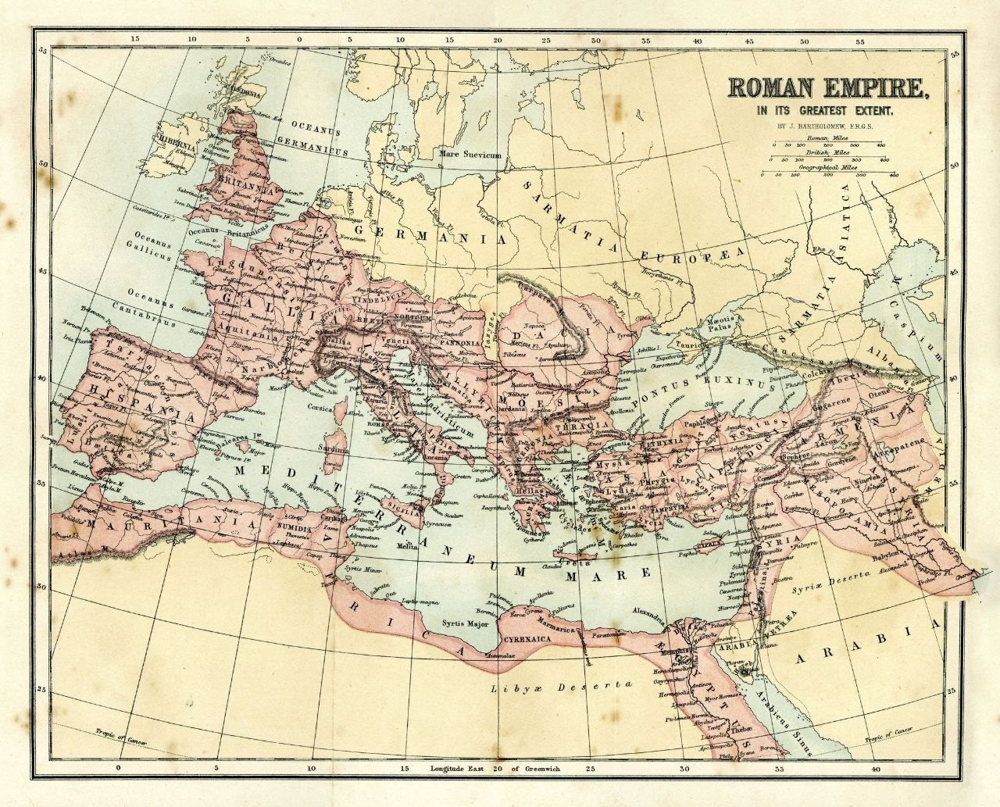

Введение
Римская империя по праву считается одной из самых грандиозных и влиятельных цивилизаций в истории человечества. Возникнув из небольшого общинного поселения на холмах у реки Тибр, Рим превратился в мощнейшую трансконтинентальную державу. Это государство создало уникальную систему управления, армию, правовую базу и культуру, ставшую основой современной европейской цивилизации.
Успех Рима заключался в его удивительной гибкости: он умел не просто завоевывать новые территории, но и эффективно интегрировать их в единое правовое и экономическое пространство, превращая бывших врагов в верных граждан государства.

Территориальный охват земель
Римская империя на пике своего могущества охватывала территории Европы, Северной Африки и Ближнего Востока. Естественными границами государства выступали Атлантический океан на западе, реки Рейн и Дунай на севере, сирийские и аравийские пустыни на востоке и пески Сахары на юге.
- Европейские провинции: Под прямым контролем Рима находились территории современных Италии, Испании, Португалии, Франции (Галлии), Бельгии, Швейцарии, Австрии, Венгрии, Румынии (Дакии), Греции и всех Балканских государств. На севере римляне смогли закрепиться в Британии, защитив границы мощным Валом Адриана.
- Азиатские владения: В Азии империя удерживала полуостров Малая Азия (современная Турция), Сирию, Финикию, Палестину, часть Аравийского полуострова и на короткое время Месопотамию.
- Африканский континент: Рим контролировал всю северную береговую линию Африки, включая Египет (главную житницу империи), Ливию, Алжир и Марокко.
- Феномен «Нашего моря» (Mare Nostrum): Римская империя стала единственным государством в истории, полностью окружившим своими землями Средиземное море. Оно превратилось во внутреннее транспортное шоссе государства, обеспечивавшее безопасную торговлю между провинциями.
